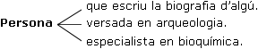
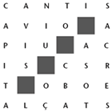

Definicions


|
En qualsevol explicació que puguem fer, oral o escrita, sovint ens aturem per descriure: el retrat d'una persona, un determinat ambient, els diferents elements d'un paisatge, etc. De vegades, però, quan necessitem donar o tenir una idea o informació més exacta, més objectiva, més científica, ens cal fer ús de les definicions. Així, per exemple, un nen petit no farà la mateixa descripció d'un cotxe que pugui fer un mecànic especialista. | |
Definir consisteix a concretar, delimitar, fixar els trets o bé el significat d'un mot. És clar que no tots els mots aporten el mateix grau d'informació (recordem que només els substantius, els adjectius, els verbs i els adverbis són mots plens de significat) ni totes les definicions es basen en el mateix procediment. Per això, podem parlar principalment de dos tipus de definicions:
- Definició lògica, més objectiva i científica, ja que descriu el significat a partir dels trets particulars o distintius de l'objecte, espècie, etc. en qüestió.
- Definició nominal, més subjectiva i comparativa, ja que descriu el significat mitjançant sinònims, antònims, derivats o exemples amb els quals queda palès l'ús del mot en qüestió.
Posem-ne un exemple: tothom té clar el significat del mot gos: animal mamífer, carnívor, domesticat, que lladra i borda, que es pot presentar de moltes races diferents. En canvi, si intentem definir un adjectiu com feliç, només ens hi aproximarem mitjançant l'ús de sinònims: satisfet, alegre, content, estar bé, joiós, etc.
En tots els casos, és fonamental l'estil emprat: perquè la informació sigui el màxim de precisa i gens ambigua, cal que el text s'ordeni anant de la informació més general a la més particular, que en tot moment s'utilitzi un to tan neutre i objectiu com es pugui i, en conseqüència, el lèxic emprat sigui l'especialitzat amb ús freqüent de cultismes i tecnicismes.
Llegiu, per exemple, la definició que dóna el diccionari de l'Enciclopèdia del terme empresa:
"Unitat economicojurídica que duu a terme la síntesi dels elements de la producció, per a l'obtenció de béns o de serveis destinats al canvi".
I vegeu-ne la diferència amb la definició del terme societat (referida al camp de l'economia):
"Agrupació o associació pactada de persones físiques o jurídiques per tal de portar a terme una activitat econòmica o mercantil determinada".
La precisió i l'especialització són els elements cabdals de tota definició. No es pot donar una definició utilitzant termes imprecisos o vagues, mots genèrics i susceptibles de diverses interpretacions en un mateix context. Això es nota sobretot en les definicions relacionades amb els diferents camps de les ciències naturals:
|
cigonya: Gènere d'ocells de l'ordre dels ciconiformes, de la família dels cicònids (Ciconia sp) de dimensions grans, amb el bec, el coll i les potes llargs, d'un vol lent i pausat, que comprèn la cigonya blanca (C. ciconia) i la cigonya negra (C. nigra). granit: Roca ígnia intrusiva d'estructura formada per un agregat més o menys equigranular, amb els cristalls visibles a ull nu. | |
A part de la consulta que pot semblar més pròpia –la de buscar un mot el significat del qual desconeixem–, un diccionari té molts altres usos: l'ortogràfic (com s'escriu un mot), el morfològic (si, per exemple, un adjectiu és d'una o dues terminacions), el sintàctic (per saber la transitivitat d'un verb), el lèxico-semàntic (per saber a quins camps semàntics pot pertànyer el mot o si forma part de determinades locucions o frases fetes), etc. Per tot això és convenient conèixer a fons la diferent informació que ens ofereixen aquestes obres.
 Exercicis
Exercicis
1) Indiqueu quines de les definicions següents són lògiques i quines són nominals.
2) Digueu a quin mot correspon cada una de les anteriors definicions.

3) Relacioneu els següents mots amb el seu corresponent significat.
4) A continuació us donem alguns mots perquè en busqueu exemples i n'assageu una breu definició referits als mots que us donem entre parèntesis:
(Font): Indret
(Forat): Obertura
(Forja): Acció
(Formatge): Producte
(Forquilla): Estri
5) Quin mot falta a cada una de les definicions següents?
6) Observeu com defineix el diccionari un biògraf, un arqueòleg i un bioquímic:

Sabríeu escriure la definició de cinc professions seguint els exemples anteriors?
7) Una bona manera de practicar la definició és omplir mots encreuats i, fins i tot, construir-los vosaltres mateixos. Ho heu provat mai? A continuació teniu dos exercicis de mots encreuats: heu de resoldre el primer i escriure les possibles definicions del segon.
I.
Horitzontals: 1. Plec de fulls. 2. Beneit. Sorda o sonora. 3. Quan?. Riu italià (al revés). 4. El de cada dia. Les primeres però desordenades. 5. Conjunció. Teixit. 6. Sagrades.
Verticals: 1. Per escriure o dibuixar. 2. Instrument musical grec. Preposició. 3. Irascibilitat. No té número. 4. Tot ho hauria de ser. Àpat (al revés). 5. Vibrant. Aconsegueix. 6. Extensions.
II.
